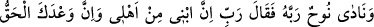
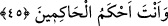
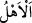

barındıran telvin makamlarından idi. Ancak bu günler geçince durum temkin makamına
dönüşmüş oldu. Kurtuluş, sebât ve derecelere ulaşmak ise bu makamdadır. “Haksızlık
yapan” yani şeriat gemisine binmekten geri kalarak kendilerine haksızlık eden “kavim”
boğulup “yok olsun!” helak olsun “denildi.”
45. Nûh Rabb’ine duâ edip dedi ki: “Ey Rabb’im, şüphesiz oğlum da âilemdendir.
Senin vaadin ise elbette haktır ve sen hâkimler hâkimisin!”
“Nûh Rabb’ine duâ edip dedi ki: “Ey Rabb’im, şüphesiz oğlum” Ken’an “da benim
âilemdendir” âilemi gemiye yüklememi emrederken zımnen hepsini kurtarmayı bana
vaad etmiştin.
Oğul babanın binâsı, yapısı olduğu için ona “ibn” denmiştir.
Tercih edilen görüşe göre Ken’an, Nûh (a.s.)’ın öz oğludur. Ya da evlatlığı, yine
âilesinin bir parçasıdır. İbnü’l-Melek’in Şerhu’l-Meşârık’ında belirtildiği üzere eşler,
çocuklar, köleler, câriyeler, akraba ve arkadaşların hepsi birden “
=âile” olarak
tefsir edilir.
İbnü’l-Kemâl de şöyle der: “__WORD__ (âile)”, bir şeyin kendisine has özelliğine ve
kendisine nisbet edilen şeye denir. Allah Teâlâ’nın “Şüphesiz oğlum da benim
âilemdendir” sözü de bu türdendir.
“Senin” bu “vaadin ise elbette haktır” cayma söz konusu olmayan, yerine
getirileceği konusunda hiç şüphe olmayan kesin bir gerçektir.
Va‘d; bir menfaatin ulaştırılacağını meydana gelmeden önce haber vermekten ibârettir.
Öyle görünüyor ki Nûh (a.s.)’ın bu duâsı, oğlunun boğulmasından öncedir. Bu duânın
maksadı, aralarına dalga girdiği zaman oğlunun kurtarılmamasındaki hikmetin ne
olduğunu öğrenmek değil, onun kurtarılmasını istemektir. Nûh (a.s.) duâ ettiği sırada
oğlunun helâk olduğunu bilmiyordu. Onun helâk olduğunu ya dalgaların onu gemiye
yaklaştırması sâyesinde ya da gemiyi ona yaklaştırması sâyesinde sonradan öğrenmişti.
Ayrıca sadece aralarına dalgaların girmesi, Nûh (a.s.)’ın oğlunun helâk olduğunu
bilmesi bir tarafa, oğlunun helâk olmasını bile gerektirmez. Çünkü Allah Teâlâ’nın
rahmeti sebebiyle onu boğulmaktan koruması imkân dahilindedir. Allah her şeye
kadirdir. Bahru’l-kelâm’daki şu bilgiler bunu te’yid etmektedir: Bir sonraki âyetteki
Allah’ın Nûh (a.s.)’a hitaben: “Bilmediğin şeyi benden isteme!” ifadesinde
“isteme”nin zikredilmesi ileride geleceği üzere bu duânın, oğlu boğulmadan önce
yapıldığını, oğlu hakkında endişe duymasından kaynaklandığını göstermektedir.”
“Ve sen hâkimler hâkimisin.” Yani, hâkimlerin en bilgilisi ve en âdilisin. Çünkü